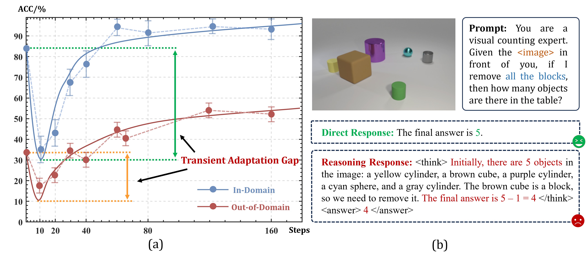
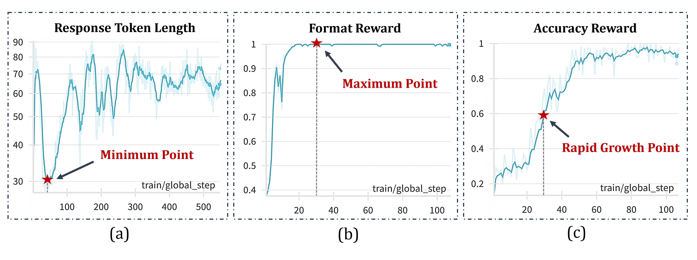
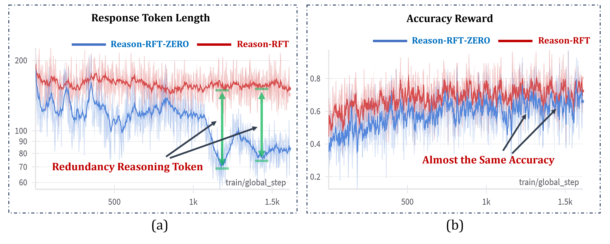

Reason-RFT Overview

Visual reasoning abilities play a crucial role in understanding complex multimodal data, advancing both domain-specific applications and artificial general intelligence (AGI). Existing methods improve VLM reasoning via Chain-of-Thought (CoT) supervised fine-tuning, using meticulously annotated training data to enhance visual reasoning capabilities. However, this training paradigm may lead to overfitting and cognitive rigidity, restricting the model's ability to transfer visual reasoning skills across domains and limiting its real-world applicability. To address these limitations, we propose Reason-RFT, a novel reinforcement fine-tuning framework that significantly enhances generalization capabilities in visual reasoning tasks. Reason-RFT introduces a two-phase training framework for visual reasoning: (1) Supervised Fine-Tuning (SFT) with curated Chain-of-Thought (CoT) data activates the reasoning potential of Vision-Language Models (VLMs), followed by (2) Group Relative Policy Optimization (GRPO)-based reinforcement learning that generates multiple reasoning-response pairs, significantly enhancing generalization in visual reasoning tasks. To evaluate Reason-RFT's visual reasoning capabilities, we reconstructed a comprehensive dataset spanning visual counting, structure perception, and spatial transformation, serving as a benchmark to systematically assess visual cognition, geometric understanding, and spatial generalization. Experimental results demonstrate Reasoning-RFT's three key advantages: (1) Performance Enhancement: achieving state-of-the-art results across multiple tasks, outperforming both open-source and proprietary models; (2) Generalization Superiority: consistently maintaining robust performance across diverse tasks and domains, outperforming alternative training paradigms. (3) Data Efficiency: excelling in few-shot learning scenarios while surpassing full-dataset SFT baselines.

Results Comparison for 2B model.
Results Comparison for 7B model.
Transient Adaptation Gap. This phenomenon refers to the temporary performance drop observed during the initial phase of training process with Reason-RFT-Zero. As the model transitions from directly outputting answers to generating structured reasoning processes, it experiences a brief adaptation difficulty, leading to a sharp performance decline followed by gradual recovery. As shown in (a), which illustrates the training process of Reason-RFT-Zero on the CLEVR-MATH, both ID and OOD test performances exhibit this sharp drop and recovery within the first 100 steps (highlighted in the zoomed-in section). We further investigate this phenomenon through a case study, as depicted in (b).
Transient Adaptation Gap.
Greedy Reward Stratification. This phenomenon describes the model's tendency during Reason-RFT-Zero training to prioritize easier rewards (e.g., Format Reward) over harder ones (e.g., Accuracy Reward). As shown in Figure, the model's Reasoning Token Length initially decreases, then gradually increases before stabilizing. This behavior coincides with the Format Reward reaching its initial peak and the Accuracy Reward entering its rapid growth phase. We infer that the model simplifies its outputs early on to quickly adapt to the structured response format, reducing Reasoning Token Length. Once the Format Reward is maximized, the model shifts focus to improving accuracy, increasing Reasoning Token Length.
Greedy Reward Stratification.
Reasoning Redundancy. This phenomenon refers to the significant difference in Reasoning Token Length between models trained under different paradigms. For example, in the Structure Perception task, Reason-RFT and Reason-RFT-Zero achieve comparable final test accuracy, but Reason-RFT exhibits notably longer Reasoning Token Length, as shown in Figure. This occurs because the CoT data used in Reason-RFT's Reasoning Activation phase, often distilled from stronger models (e.g., GPT-4o), leads the model to learn longer reasoning chains during CoT-SFT. During the Reasoning Reinforcement phase, the model retains these lengthy chains due to the lack of penalties or incentives for response length. In contrast, Reason-RFT-Zero, which lacks CoT data, stabilizes at a shorter Reasoning Token Length through exploration. We hypothesize that Reason-RFT's longer reasoning chains may be unnecessary for the current task difficulty, introducing redundant computational overhead. Experiments limiting Reasoning Token Length during inference for Reason-RFT-trained models show stable performance until a certain threshold, partially confirming Reasoning Redundancy in specific tasks.
Reasoning Redundancy.
Example 1 on Visual Counting task.
Example 2 on Visual Counting task.
Example 1 on Structure Perception task.
Example 2 on Structure Perception task.
Example 3 on Structure Perception task.
Example 4 on Structure Perception task.
Example 5 on Structure Perception task.
Example 6 on Structure Perception task.

Example 7 on Structure Perception task.
Example 8 on Structure Perception task.
Example 9 on Structure Perception task.

Example 10 on Structure Perception task.
Example 11 on Structure Perception task.
Example 12 on Structure Perception task.

Example 1 on Spatial Transformation task.

Example 2 on Spatial Transformation task.